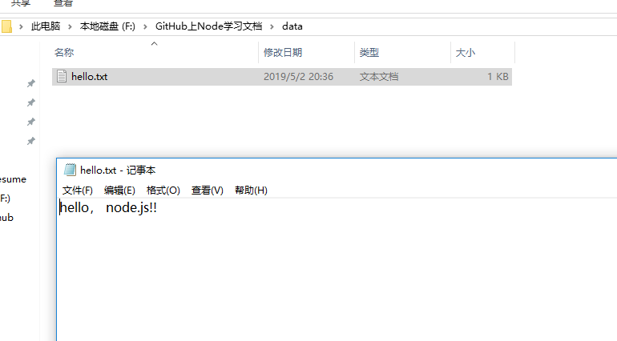
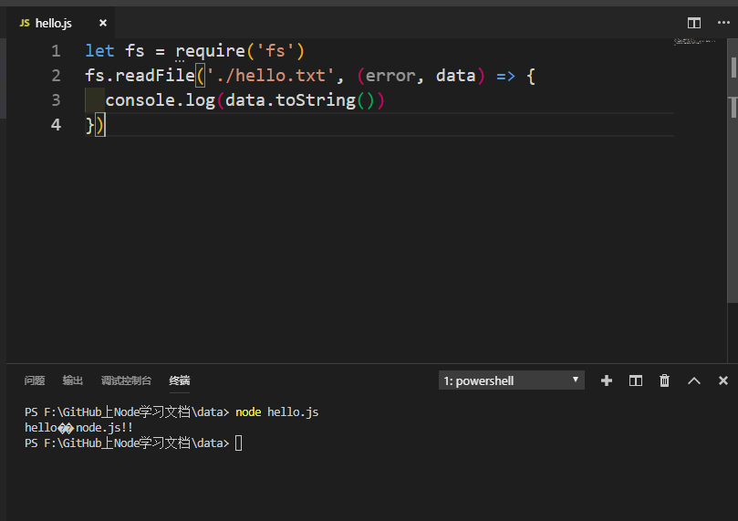
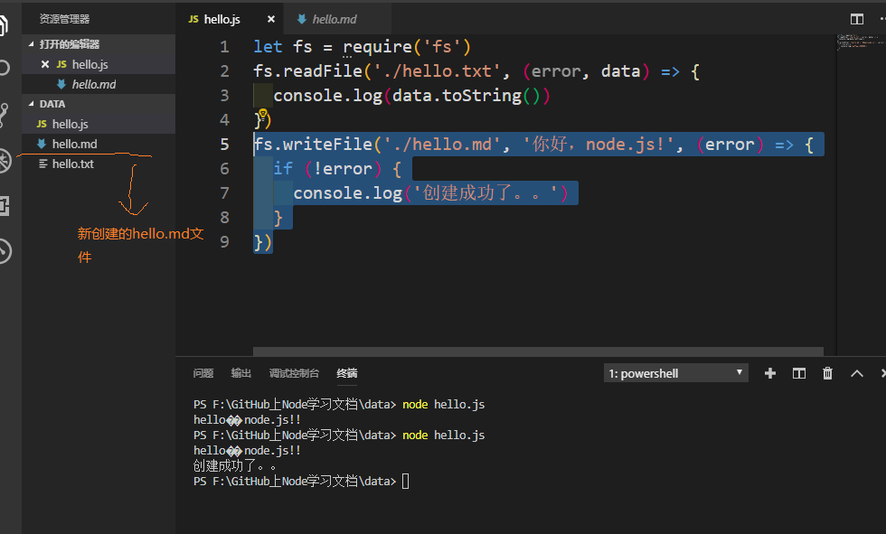
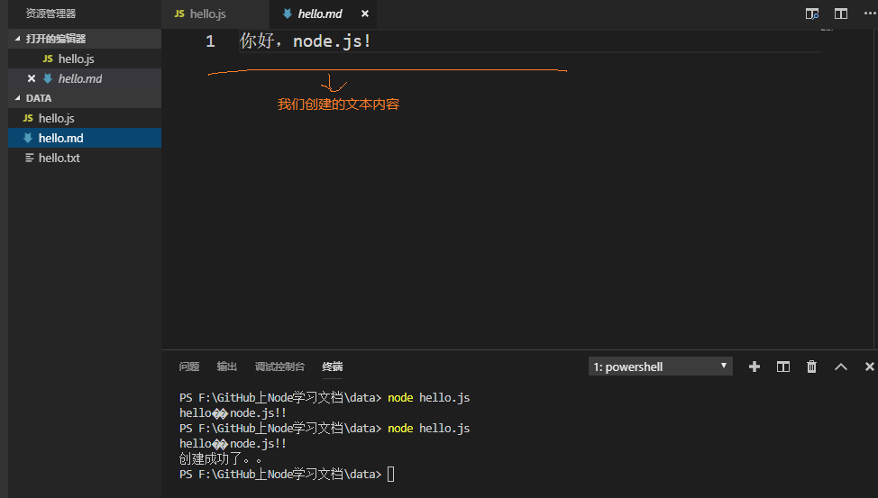

Node.js中赋予了JavaScript很多在浏览器中没有的能力，譬如：文件读写，创建http服务器等等，今天我们就来看看在node中怎样用JavaScript进行文件的读写操作。
读文件
hello.txt，并且在里面写入：hello， node.js!! ，如图：
hello.txt同级目录下创建一个hello.js文件，我们在这个js文件中利用Node提供的文件操作API, 读取hello.txt文件中的内容。let fs = require('fs')
fs.readFile()
// 读文件。 readFile函数接受两个参数：读取文件路径，回调函数（error，data两个参数），
读取文件成功：data为文件内容，error为null，读取失败：error为错误对象，data为undefined最后我们hello.js中的代码如下:
let fs = require('fs')
fs.readFile('./hello.txt', (error, data) => {
console.log(data.toString())
})
在这里可以说一下，我们读取回来的默认是二进制的内容，所以需要调用toString()方法进行转换。最后，终端可以看到结果如下：

可以看到我们刚才在hello.txt中写入的文本hello, node.js!!已经打印出来。看到这里是不是觉得很牛叉，JavaScript居然可以用来读取文件内容，完全颠覆了我们以前对JavaScript的理解，然而这一切都得归功于Node.js。
写文件
我们在刚才的hello.js中写入下面这行代码：
fs.writeFile('./hello.md', '你好，node.js!', (error) => {
if (!error) {
console.log('创建成功了。。')
}
})
// 写文件。writeFile接受三个参数：写入文件路径，写入内容，回调函数。
写入成功时候：error为null，写入失败时候：error为错误对象最后我们看到在同级目录下出现了一个hello.md文件，并且里面的内容为你好，node.js. 如图：


其实我们对文件的操作不仅仅只局限在读和写上，还有很多的操作，具体详情可以关注我后续的博客或者GitHub，大家也可以提前了解下node.js中文API。 中文API
到了这里，我们是不是对node有了一个基本的了解，知道node是干什么的，而且知道正是由于node.js，我们的JavaScript才有了无限的可能，使得JavaScript不单单局限在浏览器窗口，俗话说得好：‘能用JavaScript来实现的，最终都会用JavaScript来实现’。
本仓库是自己Node.js学习过程的真实记录，以后会每天更新一些新的知识点，希望可以对想要学Node.js的同学有一些帮助，欢迎star，你们的点赞是我更新的持久动力。同时如果你觉得本仓库中的一些知识点有错误也可以issue我，方便后期我订正！
本仓库同时在博客园和掘金更新，欢迎写博客的朋友一起学习交流。
博客园
掘金
GitHub